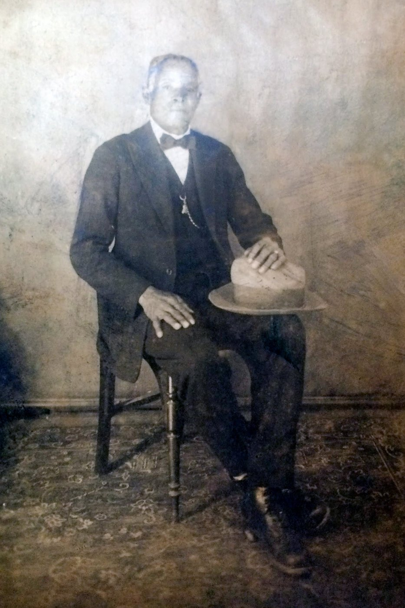
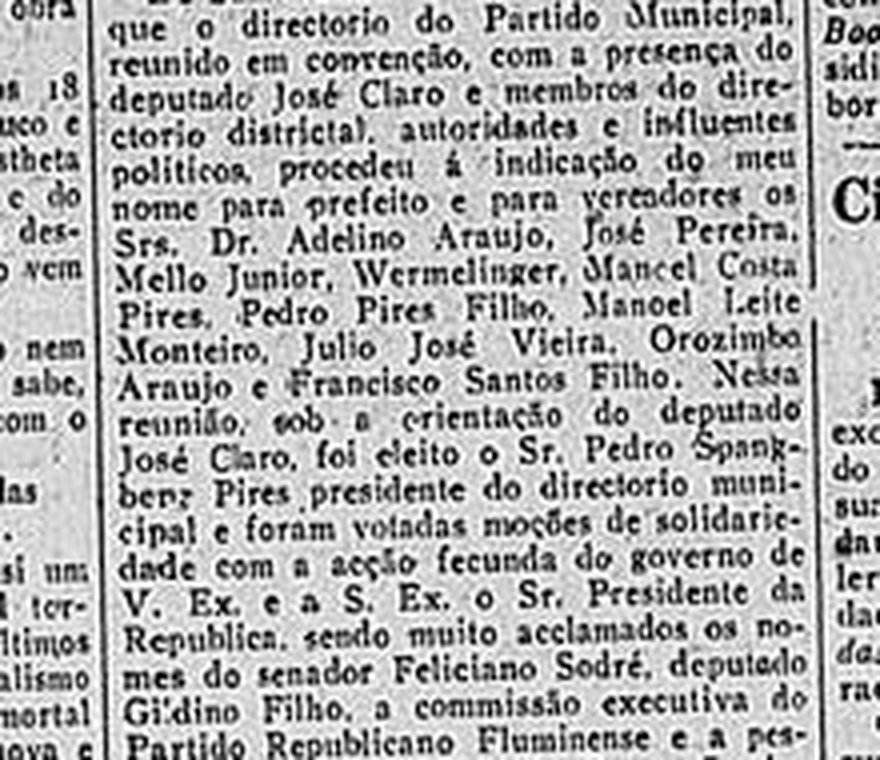
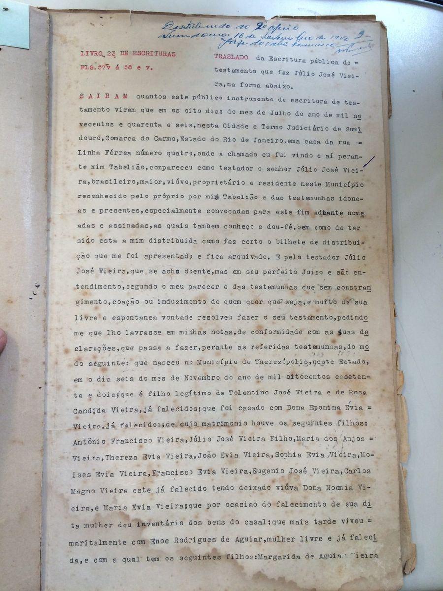
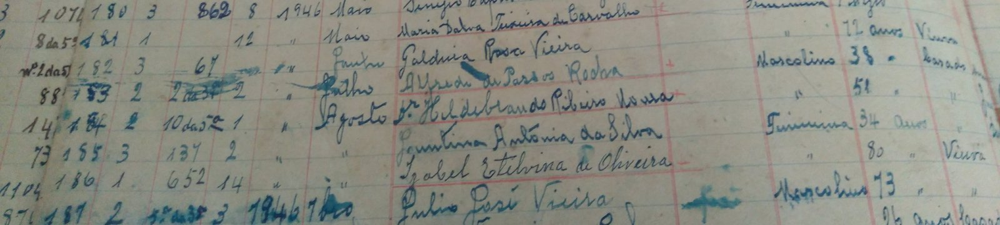
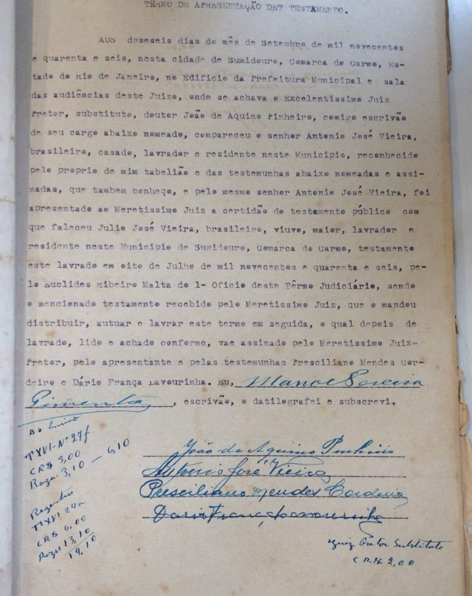
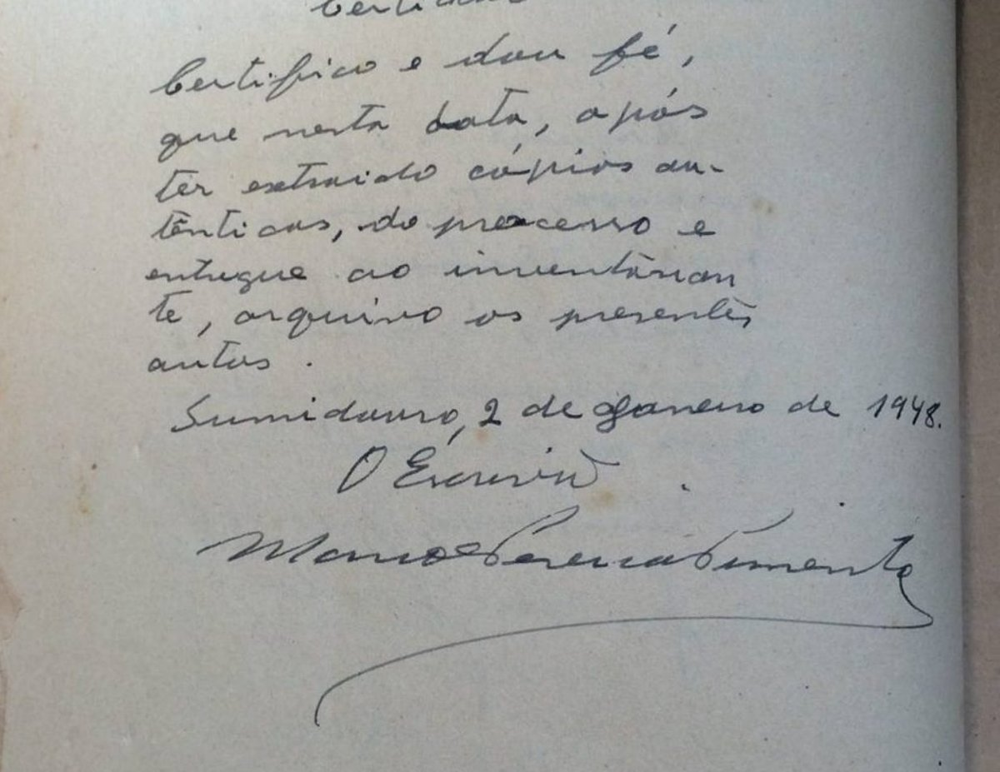

Julio José Vieira of Sumidouro, 1872–1946Julio José Vieira, de Sumidouro, 1872–1946Julio José Vieira, de Sumidouro, 1872–1946
Julio José Vieira was my great-great-grandfather. He was born in 1872, grew coffee on the hills between Sumidouro and Aparecida, stood for the town council, fathered seventeen children and died in 1946. I never found a letter of his. What I have are two court files, a newspaper column, a draft list, a line in a cemetery book and one photograph.

His life in dates
- Born6 November, in the municipality of Teresópolis, the son of Tolentino José Vieira and Rosa Candida.
- First childAntônio Francisco, my great-grandfather, is born in the parish of Nossa Senhora da Conceição do Paquequer, Sumidouro.
- WidowedHis wife Eponina Evia Vieira dies at home on 30 March, aged 49, leaving eleven children.
- The inventoryThe court lists and divides the couple's property: a house with a shop counter in Sumidouro and the Fazenda Boa Vista in Aparecida.
- CandidateThe Partido Municipal of Sumidouro puts his name forward for councillor.
- A son in the draftCarlos Magno, “son of Julio José Vieira”, is on the army draft list for Sumidouro.
- Will and deathHe dictates his will on 8 July and dies on 2 September, aged 73.
- The file is closedOn 2 January the clerk archives the will file after handing copies to the administrator of his estate.
From Teresópolis to the Paquequer
Everything I know about his origins comes from his own mouth. In the will he dictated in 1946 he states that he was born in the municipality of Teresópolis on 6 November 1872, the son of Tolentino José Vieira and Rosa Candida Vieira. He had at least one brother, Antonio José Vieira, a farmer, whom he trusted enough to name as guardian of his youngest children.
He married Eponina Evia Vieira and they settled by the Paquequer river, in Sumidouro. They had eleven children: Antônio Francisco, Julio José Junior, Maria dos Anjos, Thereza, João, Sophia, Moysés, Francisco, Eugenio, Carlos Magno and Maria. In April 1924 three were adults, one was married, four were teenagers and three were still small.
A coffee farm and a house with a counter
Eponina died on 30 March 1923 without a will, so the law required an inventory, and for three years the clerks of Sumidouro wrote down what the couple owned. In town, the chácara Barra de São Lourenço: a tiled house with shop fittings and a counter, a corn crib and a patch of grass by the river. In Aparecida, across the municipal border in Sapucaia, the Fazenda Boa Vista: about 470 alqueires, 37,000 coffee trees, 22 houses for tenant workers, a stone coffee mill, an iron cane mill, twelve pack mules, six yokes of oxen and ten cows.
The farm earned 14:981$380 from the coffee harvest of 1923 and 17:284$000 from that of 1924. The whole estate was valued at 123:100$380, with no debts. When it was divided, Julio asked to keep the working heart of the farm as his half: the houses and mills, 31,000 coffee trees, 120 alqueires, all the animals and the house in town. The eleven children received the “cold lands” of Rezende, 350 alqueires cut into strips one after another, with 6,000 coffee trees and some money.
The file also shows a little of the man. He signed the appraisal of Boa Vista in his own hand on 14 May 1924. Then he let the case rest, until the judge ordered him in August to move it on “under the penalties of the law”. And in March 1926 it was Julio himself who went to the tax office to ask for the certificates that closed it. They list what was then in his name: Boa Vista, Cachoeira, Alto and Lambary in Sumidouro, and Rezende, 370 alqueires, in Sapucaia.

Read the full study of the inventory and the will
Candidate for councillor, 1929
On 21 August 1929 the Rio de Janeiro newspaper O Paiz printed, on page 7, a telegram from Sumidouro to the president of the state. The convention of the Partido Municipal had chosen its candidates for mayor and for the town council, and Julio José Vieira is one of the names put forward for councillor. I do not know whether he was elected: a year later the 1930 revolution dissolved the councils.

A son on the draft list, 1934
The Diário Oficial of 9 October 1934 publishes, municipality by municipality, the young men drawn for army service. Under Sumidouro, number 120 is “Carlos Magno, son of Julio José Vieira”. Number 10 on the same list is “Hermenegildo, son of Nicolau Damião”, very probably a grandson of Giovanni Dammiano of Maratea. The two families of my great-grandparents, printed a few lines apart.
Carlos Magno did not outlive his father. By 1946 the will speaks of him as dead, survived by his widow, Noemia.
A second family
After Eponina's death Julio lived with Enoe Rodrigues de Aguiar, and they had six children: Margarida, Geraldo, Malvina, Sebastião, Tolentino and Julio. Two of them carry the names of his father and his own. Enoe died before him, and the children had been registered as illegitimate. Putting that right is the reason he made a will.
The will, 8 July 1946
That day the notary Euclides Ribeiro Malta was called to a house at Rua Linha Férrea, number 4. Julio was ill but, the notary writes, of sound mind. Before five witnesses, a physician, two Portuguese merchants and two landowners, he recognised Enoe's six children as his own “for all purposes of law”, with the same rights as the others. Their shares were to come from the Fazenda do Rosa e Baião, and the older children's from the adjoining land, in order of age. He made every share inalienable for life, so that none of them could sell, and named his brother Antonio guardian of the minors and first executor, followed by his sons Moysés and Antônio Francisco.

September 1946, and after
Julio died on 2 September 1946. The burial register of the Sumidouro cemetery, which I read in December 2017, has his line among the entries for that September: Julio José Vieira, male, 73 years.

Two weeks later, on 16 September, his brother Antonio José Vieira presented the will to the substitute judge, João de Aquino Pinheiro, in the town hall. The pages that follow are short. The judge ordered the will registered and the executor summoned; the clerk, Manoel Pereira Pimenta, wrote to Antonio on the 18th, entered the will in register book number 2 on the 19th, and the state collector transcribed it on the 25th. The stamp duty was 21 cruzeiros and 50 centavos, for 190 lines.

In October a new judge found that an earlier order had not been carried out and sent the file to the public prosecutor. The clerk answered, respectfully, that it had been carried out in full, and that he did not know how to comply with the new one. Then the file goes quiet until 2 January 1948, when the same clerk notes that he has made authentic copies, handed them to the administrator of the estate, and archived it.

Still looking for
That last note is a lead. If there was an administrator, there was an inventory of Julio's own estate, a second file as detailed as the one from 1924, and I have not found it yet. It should say what the farm had become after twenty more years, whether Rosa e Baião was the land of his old neighbour Henrique Frossard, and how seventeen children shared it.
Also open: when and where he married Eponina; whether he sat on the council after 1929; and what was sold over the counter of the house by the river. One more thread may or may not be his: in August 2014 the town council of São José do Vale do Rio Preto, not far away, discussed giving official status to a lane known as “Servidão Júlio José Vieira”. I do not know yet whether it is named after him or after a namesake.
From Julio to me there are four steps: his son Antônio Francisco, his granddaughter Esmerinda, my mother, and me.
Julio José Vieira foi meu trisavô. Nasceu em 1872, plantou café nos morros entre Sumidouro e Aparecida, foi candidato a vereador, teve dezessete filhos e morreu em 1946. Nunca encontrei uma carta dele. O que tenho são dois processos, uma coluna de jornal, uma lista de sorteio militar, uma linha num livro de cemitério e uma fotografia.
A vida dele em datas
- Nascimento6 de novembro, no município de Teresópolis, filho de Tolentino José Vieira e Rosa Candida.
- Primeiro filhoAntônio Francisco, meu bisavô, nasce na freguesia de Nossa Senhora da Conceição do Paquequer, Sumidouro.
- ViuvezA esposa, Eponina Evia Vieira, morre em casa em 30 de março, aos 49 anos, deixando onze filhos.
- O inventárioA justiça arrola e divide os bens do casal: uma casa com balcão de venda em Sumidouro e a Fazenda Boa Vista em Aparecida.
- CandidatoO Partido Municipal de Sumidouro indica o nome dele para vereador.
- Um filho no sorteioCarlos Magno, “filho de Julio José Vieira”, está na lista do sorteio militar de Sumidouro.
- Testamento e morteDita o testamento em 8 de julho e morre em 2 de setembro, aos 73 anos.
- O processo é arquivadoEm 2 de janeiro o escrivão arquiva o processo do testamento depois de entregar cópias ao inventariante.
De Teresópolis ao Paquequer
Tudo o que sei sobre a origem dele vem da sua própria boca. No testamento que ditou em 1946 ele declara ter nascido no município de Teresópolis em 6 de novembro de 1872, filho de Tolentino José Vieira e Rosa Candida Vieira. Tinha pelo menos um irmão, Antonio José Vieira, lavrador, em quem confiava o bastante para nomeá-lo tutor dos filhos mais novos.
Casou-se com Eponina Evia Vieira e os dois se estabeleceram à beira do rio Paquequer, em Sumidouro. Tiveram onze filhos: Antônio Francisco, Julio José Junior, Maria dos Anjos, Thereza, João, Sophia, Moysés, Francisco, Eugenio, Carlos Magno e Maria. Em abril de 1924 três eram maiores, uma era casada, quatro eram adolescentes e três ainda eram pequenos.
Uma fazenda de café e uma casa com balcão
Eponina morreu em 30 de março de 1923 sem testamento; a lei exigia então um inventário, e durante três anos os escrivães de Sumidouro anotaram o que o casal possuía. Na vila, a chácara Barra de São Lourenço: uma casa de telha com armação de negócio e balcão, um paiol e um pedaço de capim à beira do rio. Em Aparecida, do outro lado da divisa, no município de Sapucaia, a Fazenda Boa Vista: cerca de 470 alqueires, 37.000 pés de café, 22 casas de colonos, um engenho de café de pedra, um engenho de ferro para cana, doze burros de carga, seis juntas de bois e dez vacas.
A fazenda rendeu 14:981$380 com a safra de café de 1923 e 17:284$000 com a de 1924. O monte todo foi avaliado em 123:100$380, sem dívidas. Na partilha, Julio pediu para ficar com o coração produtivo da fazenda como sua meação: as casas e os engenhos, 31.000 pés de café, 120 alqueires, todos os animais e a casa da vila. Os onze filhos receberam as “terras frias” do Rezende, 350 alqueires cortados em faixas uma depois da outra, com 6.000 pés de café e algum dinheiro.
O processo também mostra um pouco do homem. Ele assinou de próprio punho a avaliação da Boa Vista em 14 de maio de 1924. Depois deixou o caso parado, até o juiz intimá-lo, em agosto, a dar andamento “sob as penas da lei”. E em março de 1926 foi o próprio Julio quem foi à coletoria pedir as certidões que encerraram o processo. Elas listam o que estava então em seu nome: Boa Vista, Cachoeira, Alto e Lambary em Sumidouro, e Rezende, 370 alqueires, em Sapucaia.
Ler o estudo completo do inventário e do testamento
Candidato a vereador, 1929
Em 21 de agosto de 1929 o jornal carioca O Paiz publicou, na página 7, um telegrama de Sumidouro ao presidente do estado. A convenção do Partido Municipal tinha escolhido seus candidatos a prefeito e à câmara, e Julio José Vieira é um dos nomes indicados para vereador. Não sei se foi eleito: um ano depois, a revolução de 1930 dissolveu as câmaras.
Um filho na lista do sorteio, 1934
O Diário Oficial de 9 de outubro de 1934 publica, município por município, os rapazes sorteados para o serviço do Exército. Em Sumidouro, o número 120 é “Carlos Magno, filho de Julio José Vieira”. O número 10 da mesma lista é “Hermenegildo, filho de Nicolau Damião”, muito provavelmente neto de Giovanni Dammiano, de Maratea. As duas famílias dos meus bisavós, impressas a poucas linhas uma da outra.
Carlos Magno não sobreviveu ao pai. Em 1946 o testamento já fala dele como falecido, deixando viúva, Noemia.
Uma segunda família
Depois da morte de Eponina, Julio viveu com Enoe Rodrigues de Aguiar, e tiveram seis filhos: Margarida, Geraldo, Malvina, Sebastião, Tolentino e Julio. Dois deles levam o nome do pai dele e o seu próprio. Enoe morreu antes dele, e os filhos tinham sido registrados como ilegítimos. Corrigir isso é a razão de ele ter feito um testamento.
O testamento, 8 de julho de 1946
Naquele dia o tabelião Euclides Ribeiro Malta foi chamado a uma casa na Rua Linha Férrea, número 4. Julio estava doente mas, escreve o tabelião, em seu perfeito juízo. Diante de cinco testemunhas, um médico, dois comerciantes portugueses e dois proprietários, reconheceu os seis filhos de Enoe como seus “para todos os efeitos de direito”, com os mesmos direitos dos outros. Os quinhões deles sairiam da Fazenda do Rosa e Baião, e os dos filhos mais velhos das terras vizinhas, por ordem de idade. Gravou todos os quinhões com inalienabilidade vitalícia, para que nenhum pudesse vender, e nomeou o irmão Antonio tutor dos menores e primeiro testamenteiro, seguido dos filhos Moysés e Antônio Francisco.
Setembro de 1946, e depois
Julio morreu em 2 de setembro de 1946. O livro de sepultamentos do cemitério de Sumidouro, que li em dezembro de 2017, traz a linha dele entre os registros daquele setembro: Julio José Vieira, masculino, 73 anos.
Duas semanas depois, em 16 de setembro, o irmão Antonio José Vieira apresentou o testamento ao juiz substituto, João de Aquino Pinheiro, no edifício da prefeitura. As páginas seguintes são curtas. O juiz mandou registrar o testamento e intimar o testamenteiro; o escrivão, Manoel Pereira Pimenta, escreveu a Antonio no dia 18, registrou o testamento no livro número 2 no dia 19, e o coletor estadual o transcreveu no dia 25. O selo custou 21 cruzeiros e 50 centavos, por 190 linhas.
Em outubro um novo juiz entendeu que um despacho anterior não tinha sido cumprido e mandou o processo ao Ministério Público. O escrivão respondeu, respeitosamente, que ele tinha sido cumprido por inteiro, e que não sabia como cumprir o novo. Depois o processo se cala até 2 de janeiro de 1948, quando o mesmo escrivão anota que extraiu cópias autênticas, entregou-as ao inventariante e o arquivou.
Ainda procurando
Essa última anotação é uma pista. Se havia inventariante, houve um inventário dos bens do próprio Julio, um segundo processo tão detalhado quanto o de 1924, e eu ainda não o encontrei. Ele deve dizer o que a fazenda tinha se tornado vinte anos depois, se Rosa e Baião eram as terras do antigo vizinho Henrique Frossard, e como dezessete filhos a dividiram.
Também em aberto: quando e onde ele se casou com Eponina; se chegou à câmara depois de 1929; e o que se vendia no balcão da casa à beira do rio. Mais um fio pode ou não ser dele: em agosto de 2014 a câmara de São José do Vale do Rio Preto, não muito longe dali, discutiu oficializar uma servidão conhecida como “Servidão Júlio José Vieira”. Ainda não sei se o nome é dele ou de um homônimo.
De Julio até mim são quatro passos: o filho Antônio Francisco, a neta Esmerinda, minha mãe e eu.
Julio José Vieira était mon arrière-arrière-grand-père. Né en 1872, il a cultivé le café sur les collines entre Sumidouro et Aparecida, s'est présenté au conseil municipal, a eu dix-sept enfants et est mort en 1946. Je n'ai jamais trouvé une lettre de lui. Ce que j'ai : deux dossiers judiciaires, une colonne de journal, une liste de tirage au sort militaire, une ligne dans un registre de cimetière et une photographie.
Sa vie en dates
- NaissanceLe 6 novembre, dans la commune de Teresópolis, fils de Tolentino José Vieira et de Rosa Candida.
- Premier enfantAntônio Francisco, mon arrière-grand-père, naît dans la paroisse de Nossa Senhora da Conceição do Paquequer, à Sumidouro.
- VeuvageSon épouse Eponina Evia Vieira meurt chez elle le 30 mars, à 49 ans, laissant onze enfants.
- L'inventaireLa justice recense et partage les biens du couple : une maison avec comptoir de boutique à Sumidouro et la Fazenda Boa Vista à Aparecida.
- CandidatLe Partido Municipal de Sumidouro propose son nom comme conseiller.
- Un fils au tirageCarlos Magno, « fils de Julio José Vieira », figure sur la liste du tirage au sort militaire de Sumidouro.
- Testament et décèsIl dicte son testament le 8 juillet et meurt le 2 septembre, à 73 ans.
- Le dossier est closLe 2 janvier, le greffier archive le dossier du testament après en avoir remis des copies à l'administrateur de la succession.
De Teresópolis au Paquequer
Tout ce que je sais de ses origines vient de sa propre bouche. Dans le testament qu'il a dicté en 1946, il déclare être né dans la commune de Teresópolis le 6 novembre 1872, fils de Tolentino José Vieira et de Rosa Candida Vieira. Il avait au moins un frère, Antonio José Vieira, cultivateur, en qui il avait assez confiance pour le nommer tuteur de ses plus jeunes enfants.
Il a épousé Eponina Evia Vieira et ils se sont installés au bord du Paquequer, à Sumidouro. Ils ont eu onze enfants : Antônio Francisco, Julio José Junior, Maria dos Anjos, Thereza, João, Sophia, Moysés, Francisco, Eugenio, Carlos Magno et Maria. En avril 1924, trois étaient majeurs, une était mariée, quatre étaient adolescents et trois étaient encore petits.
Une plantation de café et une maison avec comptoir
Eponina est morte le 30 mars 1923 sans testament ; la loi exigeait donc un inventaire et, pendant trois ans, les greffiers de Sumidouro ont noté ce que le couple possédait. Au bourg, la chácara Barra de São Lourenço : une maison couverte de tuiles avec des rayonnages de boutique et un comptoir, un grenier à maïs et un bout de pré au bord de la rivière. À Aparecida, de l'autre côté de la limite communale, à Sapucaia, la Fazenda Boa Vista : environ 470 alqueires, 37 000 caféiers, 22 maisons d'ouvriers, un moulin à café en pierre, un moulin à canne en fer, douze mulets de bât, six paires de bœufs et dix vaches.
La plantation a rapporté 14:981$380 avec la récolte de café de 1923 et 17:284$000 avec celle de 1924. L'ensemble de la succession a été estimé à 123:100$380, sans dettes. Au partage, Julio a demandé à garder pour sa moitié le cœur productif de la plantation : les maisons et les moulins, 31 000 caféiers, 120 alqueires, tous les animaux et la maison du bourg. Les onze enfants ont reçu les « terres froides » de Rezende, 350 alqueires découpés en bandes l'une après l'autre, avec 6 000 caféiers et un peu d'argent.
Le dossier montre aussi un peu de l'homme. Il a signé de sa main l'estimation de Boa Vista le 14 mai 1924. Puis il a laissé l'affaire dormir, jusqu'à ce que le juge le somme en août de la faire avancer « sous les peines de la loi ». Et en mars 1926, c'est Julio lui-même qui est allé à la perception demander les certificats qui l'ont close. Ils énumèrent ce qui était alors à son nom : Boa Vista, Cachoeira, Alto et Lambary à Sumidouro, et Rezende, 370 alqueires, à Sapucaia.
Lire l'étude complète de l'inventaire et du testament
Candidat au conseil, 1929
Le 21 août 1929, le journal de Rio O Paiz a publié, en page 7, un télégramme de Sumidouro au président de l'État. La convention du Partido Municipal avait choisi ses candidats à la mairie et au conseil municipal, et Julio José Vieira est l'un des noms proposés comme conseiller. J'ignore s'il a été élu : un an plus tard, la révolution de 1930 a dissous les conseils.
Un fils sur la liste du tirage, 1934
Le Diário Oficial du 9 octobre 1934 publie, commune par commune, les jeunes gens tirés au sort pour le service dans l'armée. À Sumidouro, le numéro 120 est « Carlos Magno, fils de Julio José Vieira ». Le numéro 10 de la même liste est « Hermenegildo, fils de Nicolau Damião », très probablement un petit-fils de Giovanni Dammiano, de Maratea. Les deux familles de mes arrière-grands-parents, imprimées à quelques lignes l'une de l'autre.
Carlos Magno n'a pas survécu à son père. En 1946, le testament parle déjà de lui comme d'un défunt, laissant une veuve, Noemia.
Une seconde famille
Après la mort d'Eponina, Julio a vécu avec Enoe Rodrigues de Aguiar, et ils ont eu six enfants : Margarida, Geraldo, Malvina, Sebastião, Tolentino et Julio. Deux d'entre eux portent le prénom de son père et le sien. Enoe est morte avant lui, et les enfants avaient été déclarés illégitimes. Réparer cela est la raison pour laquelle il a fait un testament.
Le testament, 8 juillet 1946
Ce jour-là, le notaire Euclides Ribeiro Malta fut appelé dans une maison de la Rua Linha Férrea, numéro 4. Julio était malade mais, écrit le notaire, sain d'esprit. Devant cinq témoins, un médecin, deux commerçants portugais et deux propriétaires, il a reconnu les six enfants d'Enoe comme les siens « à tous les effets de droit », avec les mêmes droits que les autres. Leurs parts devaient être prises sur la Fazenda do Rosa e Baião, et celles des aînés sur les terres voisines, par ordre d'âge. Il a frappé chaque part d'inaliénabilité à vie, pour qu'aucun ne puisse vendre, et a nommé son frère Antonio tuteur des mineurs et premier exécuteur, suivi de ses fils Moysés et Antônio Francisco.
Septembre 1946, et après
Julio est mort le 2 septembre 1946. Le registre d'inhumation du cimetière de Sumidouro, que j'ai lu en décembre 2017, porte sa ligne parmi les inscriptions de ce mois de septembre : Julio José Vieira, sexe masculin, 73 ans.
Deux semaines plus tard, le 16 septembre, son frère Antonio José Vieira a présenté le testament au juge suppléant, João de Aquino Pinheiro, à la mairie. Les pages qui suivent sont brèves. Le juge a ordonné l'enregistrement du testament et la convocation de l'exécuteur ; le greffier, Manoel Pereira Pimenta, a écrit à Antonio le 18, a inscrit le testament au registre numéro 2 le 19, et le percepteur de l'État l'a transcrit le 25. Le droit de timbre s'élevait à 21 cruzeiros et 50 centavos, pour 190 lignes.
En octobre, un nouveau juge a estimé qu'une ordonnance antérieure n'avait pas été exécutée et a transmis le dossier au ministère public. Le greffier a répondu, respectueusement, qu'elle l'avait été entièrement, et qu'il ne savait pas comment exécuter la nouvelle. Puis le dossier se tait jusqu'au 2 janvier 1948, quand le même greffier note qu'il a tiré des copies authentiques, les a remises à l'administrateur de la succession et l'a archivé.
Ce que je cherche encore
Cette dernière note est une piste. S'il y avait un administrateur, il y a eu un inventaire des biens de Julio lui-même, un second dossier aussi détaillé que celui de 1924, et je ne l'ai pas encore trouvé. Il devrait dire ce qu'était devenue la plantation vingt ans plus tard, si Rosa e Baião était la terre de son ancien voisin Henrique Frossard, et comment dix-sept enfants se la sont partagée.
Restent aussi ouverts : quand et où il a épousé Eponina ; s'il a siégé au conseil après 1929 ; et ce qui se vendait au comptoir de la maison au bord de la rivière. Un dernier fil est peut-être le sien, ou non : en août 2014, le conseil municipal de São José do Vale do Rio Preto, non loin de là, a discuté d'officialiser une ruelle connue sous le nom de « Servidão Júlio José Vieira ». Je ne sais pas encore si elle porte son nom ou celui d'un homonyme.
De Julio à moi, il y a quatre pas : son fils Antônio Francisco, sa petite-fille Esmerinda, ma mère et moi.